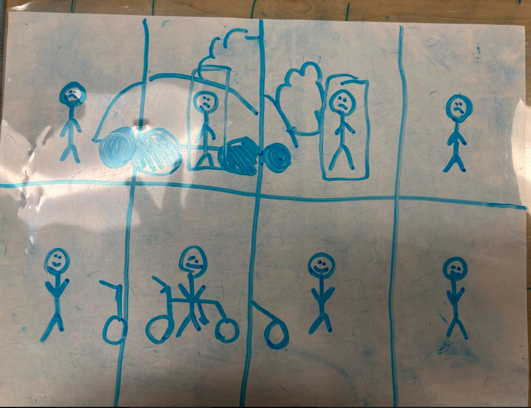

The story takes place in a city, their is a man named bob who notice
That we are damaging our own enviroment with climate change he
feels if we would stop using our cars everyday that there is a chance of
saving our enviroment. So instead of him driving his car to work he biked
he fears the emontianal and physical harm that climate change has could be
the destruction of he's enviroment.
CHARACTERS AND CENTRAL NARRATIVE CONFLICT Goal Strength(s), Weakness(es), Vulnerability
Protagonist
The goal of the protagonist is to mitigate the effects of climate change to improve their own life
The strengths of the protagonist include their ability to make changes in their life that contribute to bettering the lives of others.
The protagonist is able to recognize issues in the world
The protagonist is ambitious and can take action against an issue
The weakness of the protagonist includes their susceptibility to the effects of climate change (the antagonist).
The protagonist can be harmed, both physically and mentally by the effects of climate change
The vulnerability of the protagonist comes from the fear of the possible negative effects of climate change on their life and the lives of others.
The protagonist fears the physical and emotional harm that climate change can cause
Antagonist
The goal of the antagonist is to further worsen the effects of climate change on the life of the protagonist.
The strengths of the antagonist include climate change’s ability to cause widespread destruction of both the natural and built environment.
The antagonist is able to affect many people, regardless of age, class, or location
The antagonist can be strengthened by environmentally-harmful actions taken by humans.
The weaknesses of the antagonist include that it can be diminished by actions taken by the protagonist.
Actions taken by the protagonist can prevent the antagonist from achieving its goal
The antagonist does not have an emotional vulnerability, because the antagonist is not personified.
